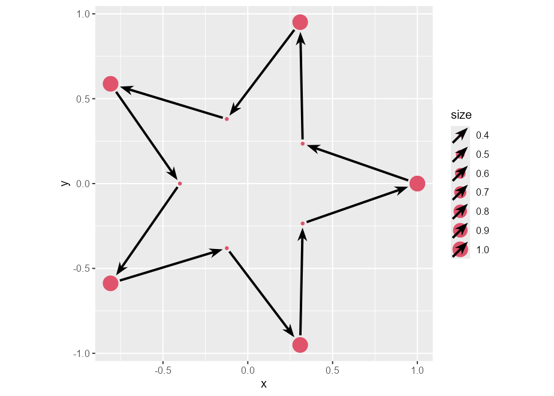
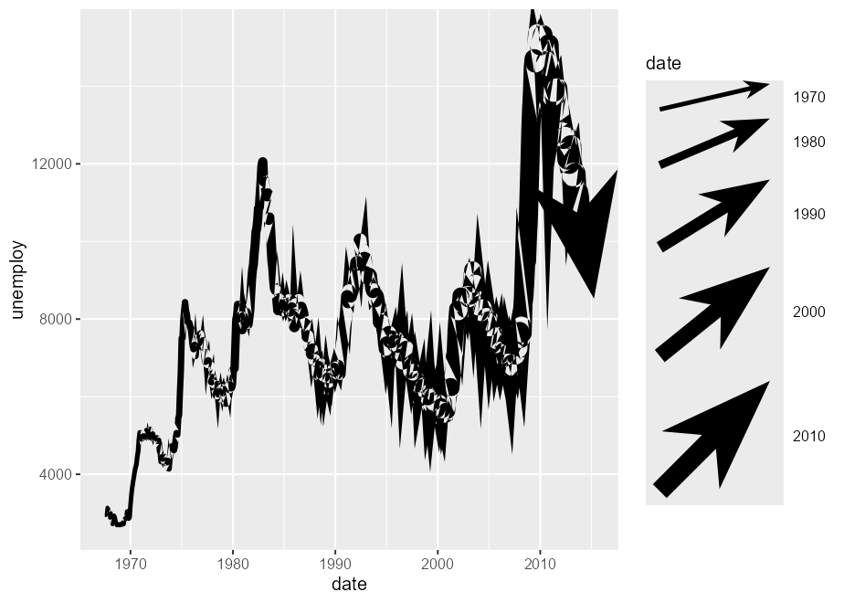

The goal of ggarrow is to draw arrows in {ggplot2}. It is a {ggplot2} extension package that focusses on specialised geometry layers to expand the toolkit of arrows. While you’re reading this, I’ll take this opportunity to inform you that while this package probably works, it is not very polished.
Installation
You can install the development version of ggarrow from GitHub with:
# install.packages("devtools")
devtools::install_github("teunbrand/ggarrow")Arrows
They’re made for pointing at things. The workhorse functionality is in the geom_arrow() function that, unsurprisingly, draws arrows.
Basic arrows
library(ggarrow)
#> Loading required package: ggplot2
#> Warning: package 'ggplot2' was built under R version 4.3.2
p <- ggplot(whirlpool(5), aes(x, y, colour = group)) +
coord_equal() +
guides(colour = "none")
p + geom_arrow()
Variable width
Arrows, in contrast to vanilla lines, can have variable widths.
p + geom_arrow(aes(linewidth = I(arc))) # Identity scale for linewidthInner arrows
Besides varying linewidths, there is also an option to place arrows along the path. You could draw arbitrarily many of these, but I doubt that will look pretty.
p + geom_arrow(arrow_mid = "head_wings", mid_place = c(0.25, 0.5, 0.75))Ornament styles
You can also tweak what the arrows should look like. The example below is a bit verbose, but gives an impression of the available options by combining different styles of arrow heads and what are termed ‘arrow fins’.
p + geom_arrow(aes(arrow_head = group, arrow_fins = group), linewidth = 2) +
scale_arrow_head_discrete(values = list(
"head_wings",
arrow_head_wings(offset = 20, inset = 70),
arrow_head_line(lineend = "parallel"),
arrow_head_line(45, lineend = "round"),
"head_minimal"
), guide = "none") +
scale_arrow_fins_discrete(values = list(
"fins_feather",
arrow_fins_feather(indent = 0, outdent = 0, height = 1),
"fins_line",
arrow_fins_line(90),
"fins_minimal"
), guide = "none")There are some other geoms that mimic bread-and-butter ggplot2 layers, such as geom_arrow_segment() and geom_arrow_curve(), that add the same arrow functionality on top of the geom_segment() and geom_curve() layers.
Chains
Aside from these, there is also geom_arrow_chain(), which has no equivalent in vanilla ggplot2. It adds arrows in between points, and dodges the endpoints a bit so that they don’t seem to touch. In the example below, we can see that we can dodge points of different sizes.
t <- seq(0, 2 * pi, length.out = 11)
l <- rep(c(1, 0.4), length.out = 11)
df <- data.frame(
x = cos(t) * l,
y = sin(t) * l,
size = l
)
ggplot(df, aes(x, y, size = size)) +
geom_point(colour = 2) +
geom_arrow_chain() +
coord_equal()
Theme elements
Because arrows are almost drop-in replacements for lines, I also included element_arrow() as a theme element. With function, you can set any line element in the theme to an arrow, with similar customisation options as the layers.
p + geom_arrow() +
theme(
axis.line.x = element_arrow(
arrow_head = "head_wings", linewidth_head = 1.5, linewidth_fins = 0
),
axis.line.y = element_arrow(arrow_head = "head_line"),
axis.ticks.length = unit(0.4, "cm"),
axis.ticks.x = element_arrow(linewidth_fins = 0, linewidth_head = 2),
axis.ticks.y = element_arrow(arrow_fins = "head_line"),
panel.grid.major = element_arrow(
linewidth_head = 5, linewidth_fins = 0,
resect_head = 5, resect_fins = 5, lineend = "round"
),
panel.grid.minor = element_arrow(
linewidth_head = 0, linewidth_fins = 5
)
)Limitations
The current limitations are twofold. The variable width paths don’t lend themselves well to jagged paths with short segments. This is because I had to implement linejoins for variable width paths and I barely have high-school level understanding of trigonometry. Consequently, the linejoins look bad with short jagged segments. The other limitation is that there is no good mechanism in place for setting the size of a legend key, so these might be off.
ggplot(economics, aes(date, unemploy)) +
geom_arrow(aes(linewidth = date))
#> Warning in angle[which(keep)] <- atan2(y[final] - newy, x[final] - newx):
#> number of items to replace is not a multiple of replacement length
The best advice I can give for the jagged linejoins is to smooth the data beforehand.
ggplot(economics, aes(date, unemploy)) +
geom_arrow(
stat = "smooth", formula = y ~ x, method = "loess", span = 0.05,
aes(linewidth = after_stat(x))
)With regards to the legend-keys, that’ll require a change in ggplot2’s code.
Dependency statement
The {ggarrow} package largely takes on the same dependencies as {ggplot2} to keep it on the lightweight side. However, this package wouldn’t work at all without the {polyclip} dependency, which is the only one outside {ggplot2}’s imports.
Related work
Of course, the {grid} package, on which {ggplot2} is build upon, offers some options for arrows. The {arrowheadr} package provides some great extensions for arrowheads. The {vwlines} package that handles variable widths lines much more graciously than this package. Both the {gggenes} and {gggenomes} packages use arrows in a domain-specific context. For vector field visualisation, there is the {ggquiver} package. The {ggarchery} package also provides extended options for the geom_segment() parametrisation of lines.